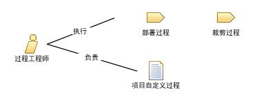

| 角色：过程工程师 |
 |
|
关系
 |
||
| 修改 |
|
|
|---|---|---|
主要描述
此角色在软件项目中的任何管理团队里扮演了重要的部分。此角色负责所有和项目过程有关的方面，例如：
|
人员配备
| 技能 | 拥有对低层过程定义和可用工具的深刻理解从而做出明智的过程裁剪，对扮演此角色的人来说很重要。很显然，承担此角色的人应该具有在软件项目工作的多次经验，并理解导致过程裁剪的各种因素。 |
|---|---|
| 分配方法 | 承担此角色的人员通常来自组织的过程组，在项目中充当过程引导者。 通常的做法是组织在经历过程变革时，寻求公司外部的资源来在最初的试点项目组中担任此角色。 |
This program and the accompanying materials are made available under the |